Ting Yu × 许百韬
从“明天见”到“每天见”
这不是一份冷冰冰的聊天统计，而是 35,129 条消息里， 那些玩笑、晚安、想你、争论和认真走向彼此的证据。
0
总消息
0
活跃天数
0
表情符号
0
[旺柴]
Relationship Timeline
不是突然相爱，是很多个普通句子慢慢站到了一起
一开始是“还把你坑下车了”，后来是“明天见”，再后来是“主要就是想你”。 聊天记录里最珍贵的地方，不是每一句都浪漫，而是你们真的把彼此放进了日常。
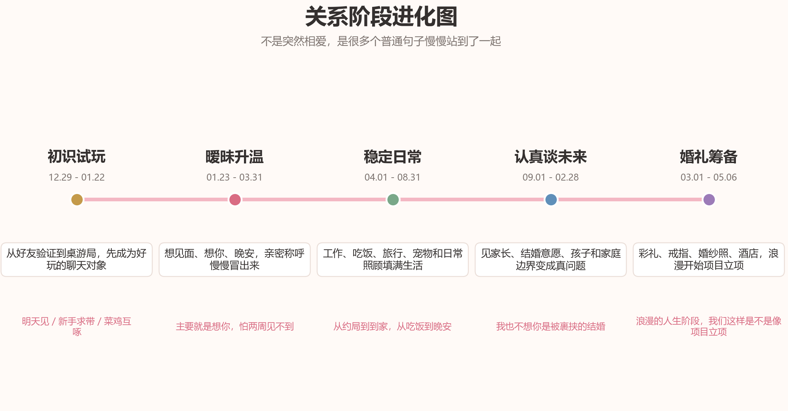
聊天片段回放
不好意思，还把你坑下车了
哈哈哈 没事
明天见，新手求带
菜鸡互啄
主要就是想你，怕两周见不到
浪漫的人生阶段，我们这样是不是像项目立项
从好玩开始
桌游、血染、麻将、德扑，是你们一开始互相靠近的理由。 好的关系有时候不是先说“我爱你”，而是先发现“和你一起玩很轻松”。
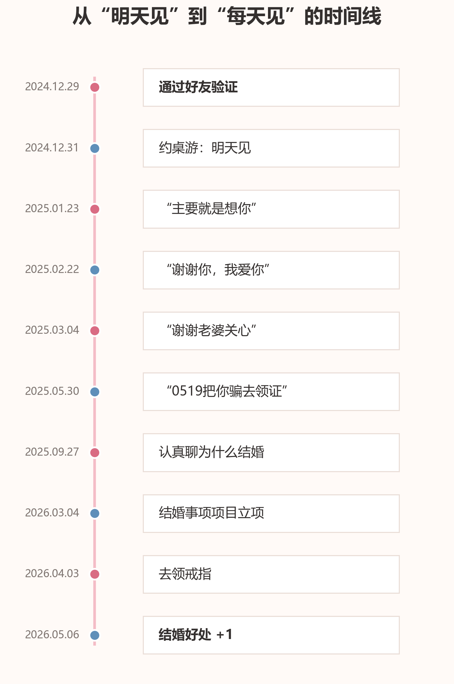
Daily Care Index
爱经常不在大词里，而在吃饭、休息、到家、晚安这些小事里
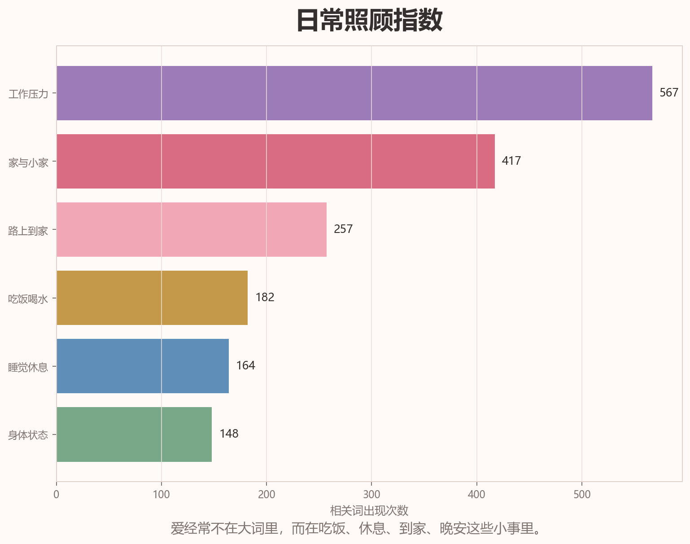
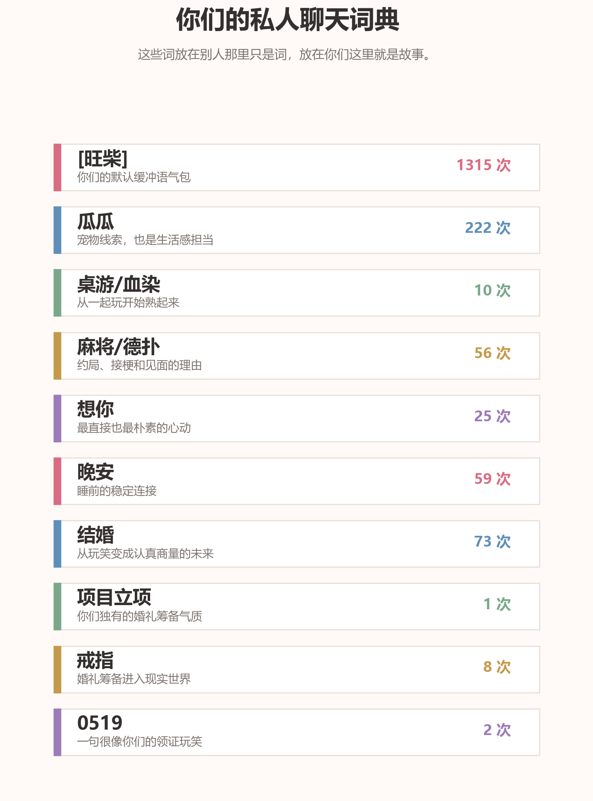
Emoji Universe
你们的聊天有一个很明显的底色：[旺柴]
3,661 个表情符号里，[旺柴] 出现了 1,948 次。它像一个缓冲垫， 把认真、尴尬、撒娇和嘴硬都变得可爱一点。
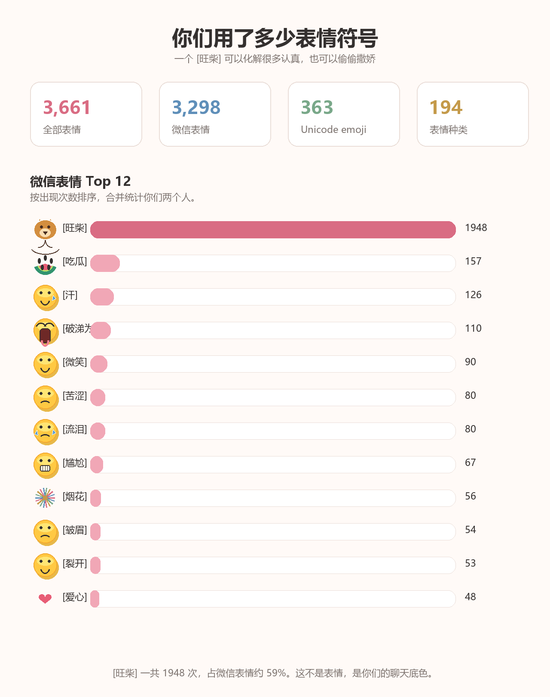
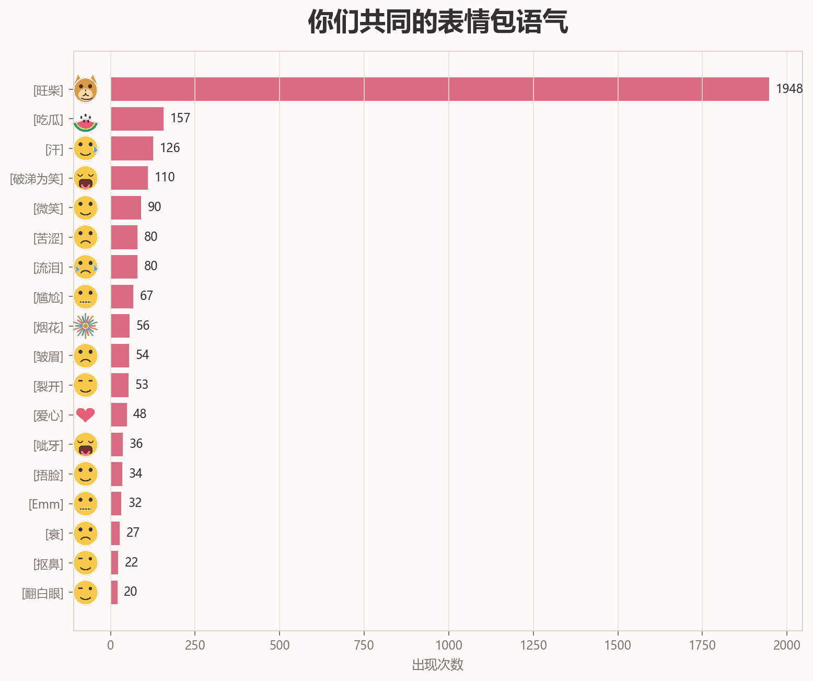
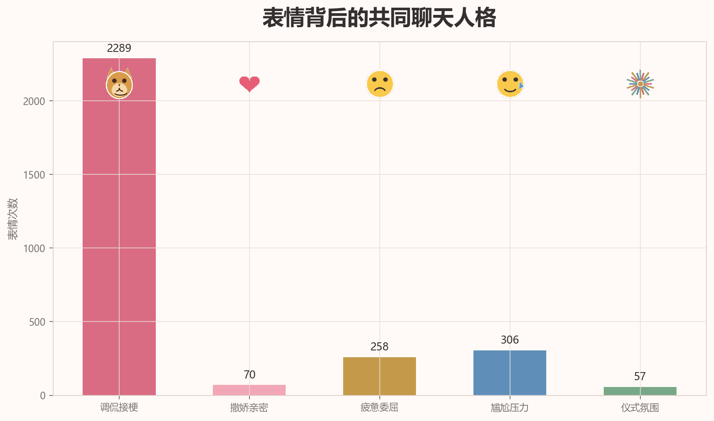
Data Gallery
把聊天记录翻成一组可以收藏的图
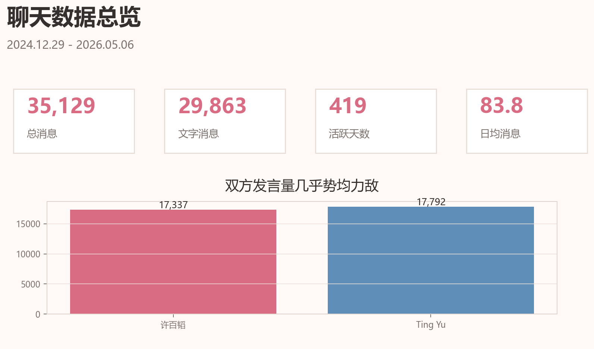
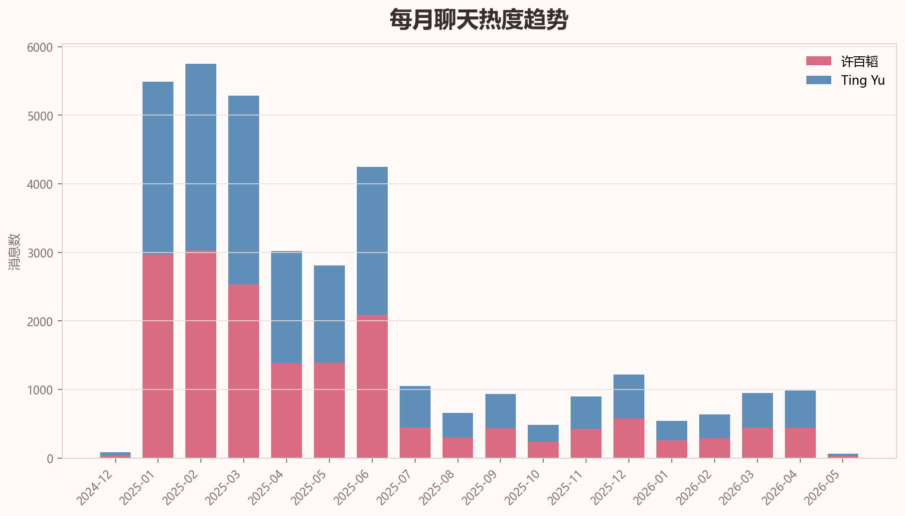
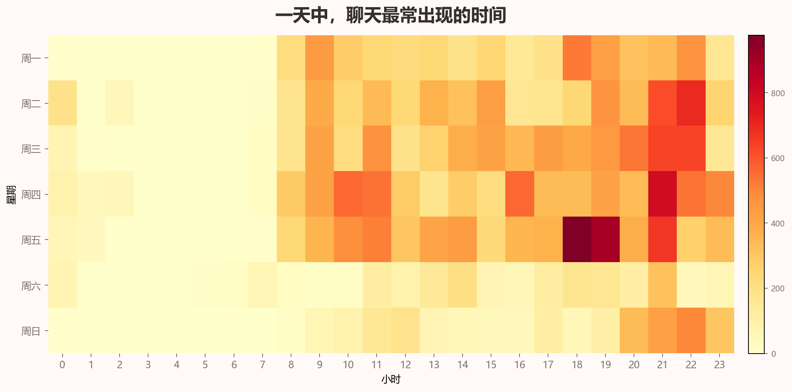
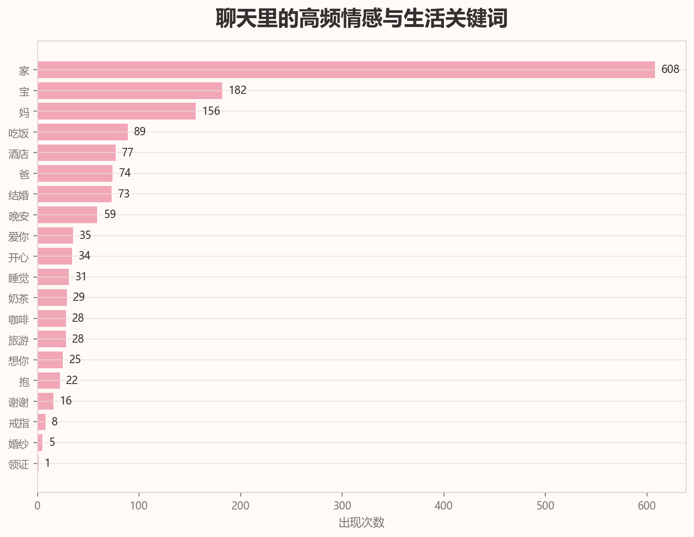
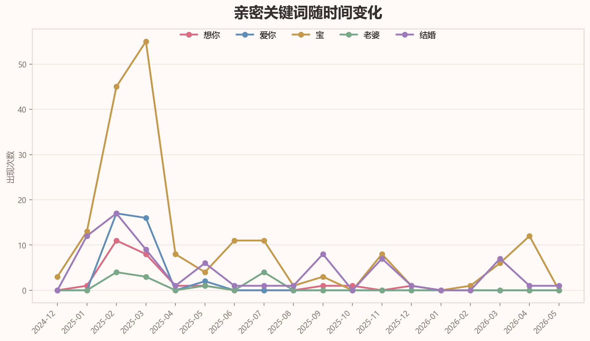
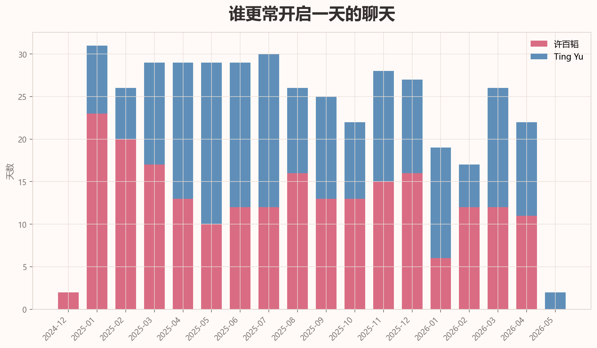
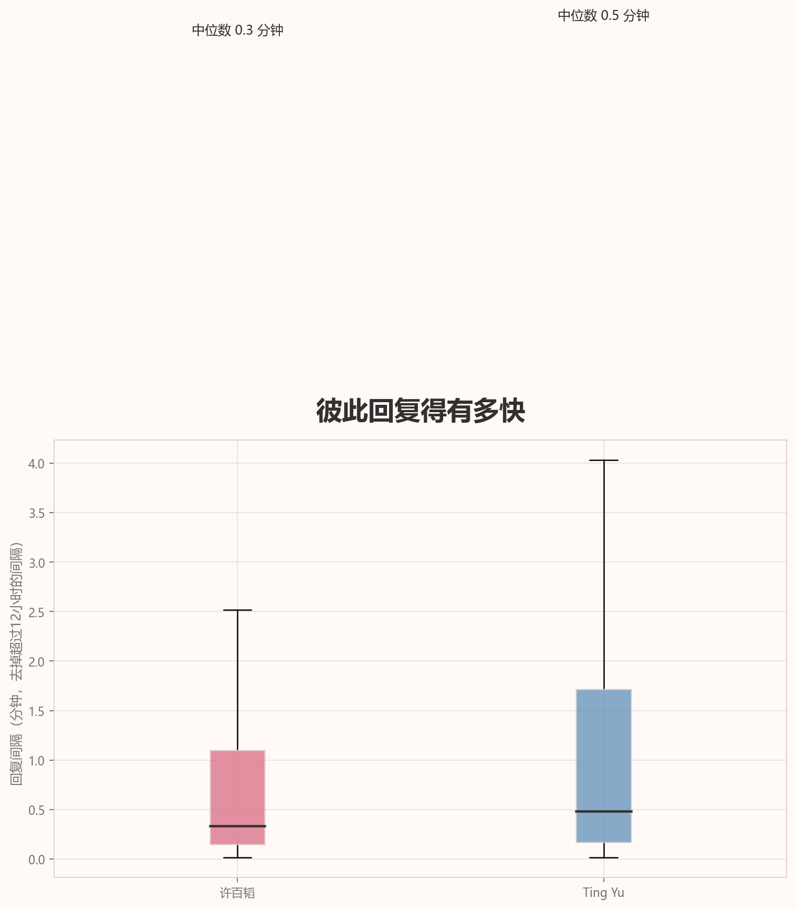
从“明天见”到“每天见”，从一起玩到认真讨论一个小家。 愿以后还有很多个普通日子，都被你们过成只属于彼此的证据。